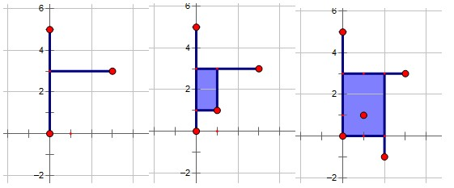

HDU4877. ZCC loves Minecraft
内存限制：6000/3000 MS (Java/Others) 时间限制：32768/32768 K (Java/Others)
题目描述

ZCC loves playing Minecraft, a sandbox construction game, with his friends. Each friend built his own house, which can be regarded as a point in a plane. However, their houses are so dispersed that they often get attacked by monsters on the way to others' houses. Fortunately, monsters won't come into being in the bright areas. ZCC planned to light a point set S up, through which his friends can visit each other safely. S should include every house. For the convenience of transport, the intersection of S and an arbitrary horizon or vertical line should be empty, a point, or a single continuous segment. This definition is similar to the definition of convex hull, but the line can only be horizon or vertical here because everything in Minecraft is formed by cubes. ZCC also wanted to minimize the area of S to save money.
After working hard for a long time, ZCC obtained the solution. However, as ZCC became more and more famous, the number of his friends increased sharply. Every time a new friend joins the game, ZCC have to calculate S again. He needs your help.
Notice that S may not be continuous, but it's guaranteed that S is continuous at any time. The situation of the following figure will never occur.

输入格式
The input contains several test cases.
Each test case contains n+1 lines.
A integer N(1≤N≤100000) will exist in the first line of each input,which represents the number of friends.
The i-th (2≤i≤n+1) line contains two integers x,y (-100000≤x,y≤100000),which represent the coordinate of the i-1-th friend.
Each test case contains n+1 lines.
A integer N(1≤N≤100000) will exist in the first line of each input,which represents the number of friends.
The i-th (2≤i≤n+1) line contains two integers x,y (-100000≤x,y≤100000),which represent the coordinate of the i-1-th friend.
输出格式
Output should contain n lines.
The i-th line is a number that is the area of S after the i-th friend joins the game.
The i-th line is a number that is the area of S after the i-th friend joins the game.
样例
样例输入
5
0 0
0 5
3 3
1 1
2 -1样例输出
0
0
0
2
6
HintThe blue areas in the following pictures represent point set S.
